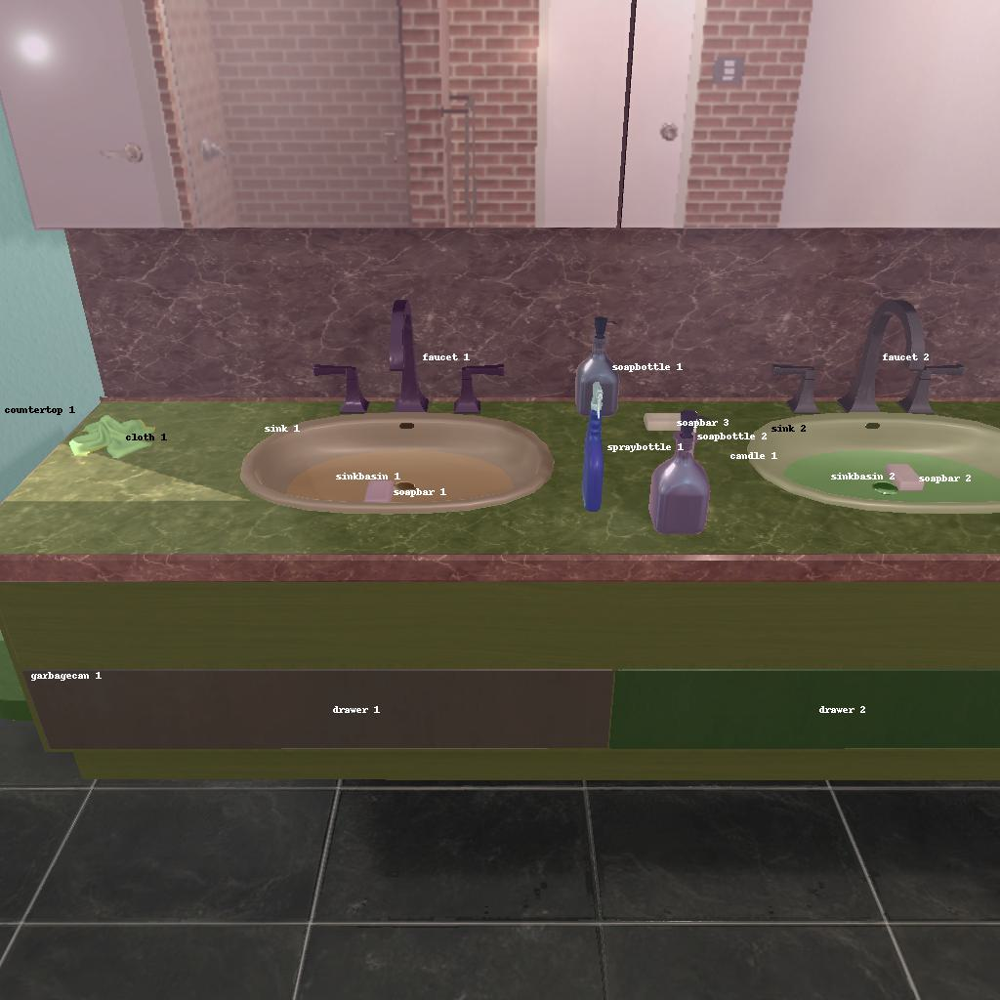

---------------------------------------------------------task: 27---------------------------------------------------------
--------------------------------------------------------------------------------------------------------------------------------------------------------------------
--------------------------------------------------------------------------------------------------------------------------------------------------------------------
Step:--------------------------------------------------------------------------6-------------------------------------------------------------------------------
----------------------------------------
VLM Prompt:
Image1:
**Instruction**
1. Analyze the provided image to identify all visible household objects, focusing on those relevant to the task description "find two soapbottle and put them in garbagecan."
2. Use the analysis of the image and the task hint "The agent must find an object of the desired type, pick it up, find the correct location to place it, put it down there, then look for another object of the desired type, pick it up, return to previous location, and put it down there with the other object." to answer the question: what is the most reasonable action in the choices for the task description "find two soapbottle and put them in garbagecan"?
4. Decide and write the answer using the template: The answer is: (i): , where i is the real number. If there is no desired object in the image, search every place based on **Initial Observation** to find the object. And if no one is exactly correct, choose a similar answer.
**Initial Observation**
You are in the middle of a room. Looking quickly around you, you can see countertop (1), sinkbasin (1-2), sink (1-2), garbagecan (1), drawer (1-2), toilet (1), handtowelholder (1)
**Answer Choices**
(1): go to countertop 1
(2): go to sinkbasin 1
(3): go to sink 1
(4): go to garbagecan 1
(5): go to drawer 2
(6): go to sink 2
(7): go to sinkbasin 2
(8): go to toilet 1
(9): go to handtowelholder 1
(10): open drawer 1
(11): close drawer 1
(12): examine drawer 1
**Answer**
Let's think step by step by following the instructions.
----------------------------------------
----------------------------------------
Original Response:
First, we need to identify the soapbottles. From the image, we can see two soapbottles labeled "soapbottle 1" and "soapbottle 3" on the countertop next to sink 1 and sinkbasin 2.
Next, according to the task hint, the agent must find an object of the desired type, which is the soapbottles in this case. Since we have located them, the agent does not need to search every place.
Now, we need to choose the most reasonable action for the task description "find two soapbottle and put them in garbagecan." Since the soapbottles are on the countertop and we need to put them in the garbagecan, the most reasonable first action would be to go to the countertop to pick up the soapbottles.
Therefore, the answer is: (1): go to countertop 1.
----------------------------------------
----------------------------------------
>>> Refine Original VLM Response and Get Pure Action: No action
----------------------------------------
-----------------------------------------------------------------
Running time: 17.305780172348022 seconds
Total Money: 9.760110000000008
-----------------------------------------------------------------
-----------------------------------------------------------------
Text Observation:Nothing happens.
-----------------------------------------------------------------
UNSUCCEED